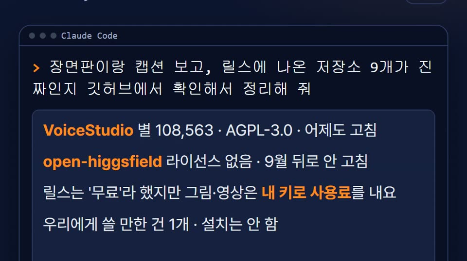

윈도우 기준이에요. 처음 한 번 깔고, 그다음부터는 '쓰기' 줄만 바꿔 쓰면 돼요. 30초짜리 쇼츠로 우리 PC 에서 6.3초 걸렸어요(2026년 11월 12일).
공개 영상 주소 하나로 영상과 캡션 글을 받아요.
winget install yt-dlp.yt-dlpyt-dlp --write-description -f "bv*[ext=mp4]+ba[ext=m4a]/b[ext=mp4]" -o short.mp4 영상주소영상 길이를 16칸으로 나눠 한 장에 펼쳐요. 아래 명령의 30 자리에 영상 길이(초)를 넣으세요.
winget install Gyan.FFmpegffmpeg -i short.mp4 -vf "fps=16/30,scale=270:-1,tile=4x4" -frames:v 1 sheet.jpg
장면판과 캡션을 읽고 정리해요. 릴스가 말한 숫자를 깃허브에서 직접 대조하게 시킬 수 있어요.
winget install Anthropic.ClaudeCodesheet.jpg 랑 short.description 보고 무슨 내용인지 정리하고, 나온 숫자가 맞는지 확인해 줘각 도구는 만든 사람의 것이고 우리와 제휴가 없어요.
깔기 전에 저장소에서 라이선스와 안내를 한 번 더 확인해 주세요.